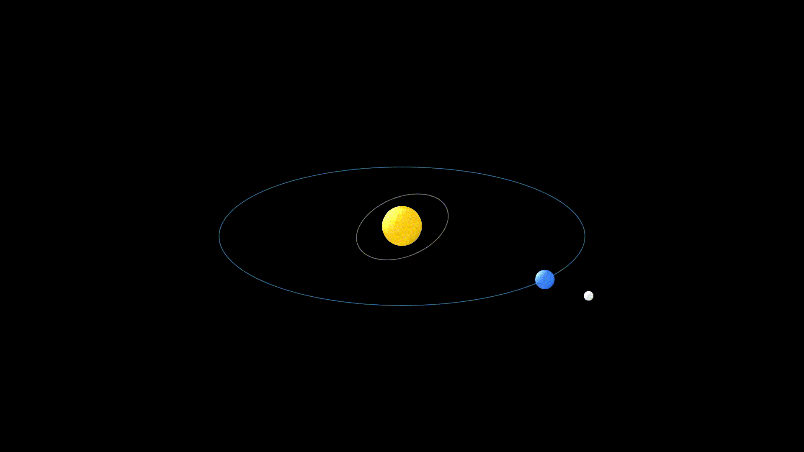
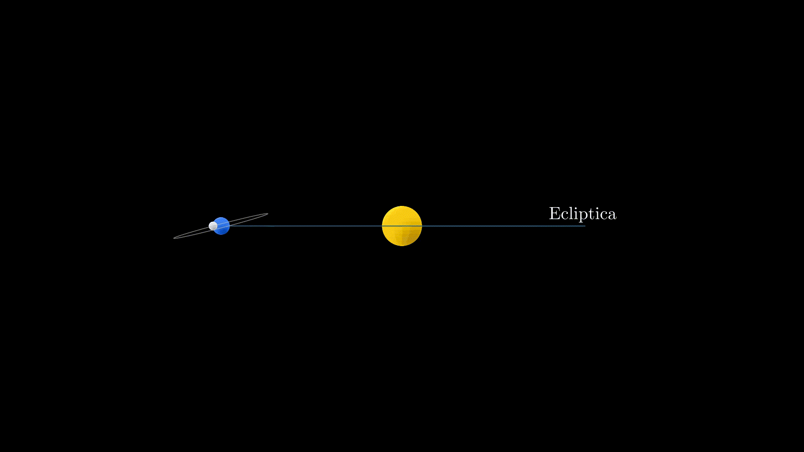
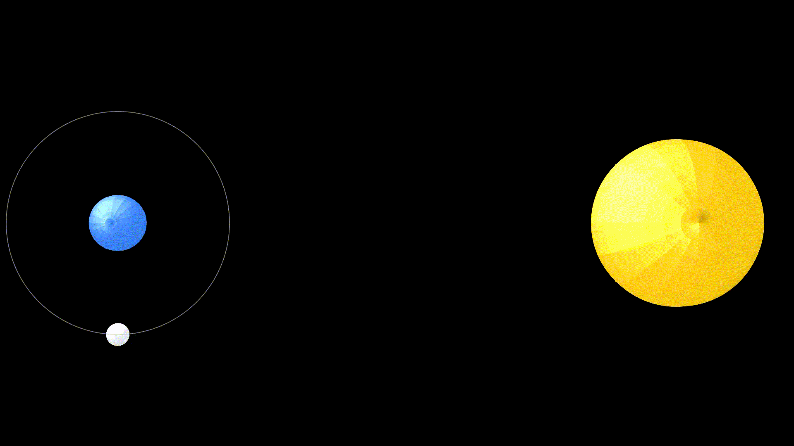
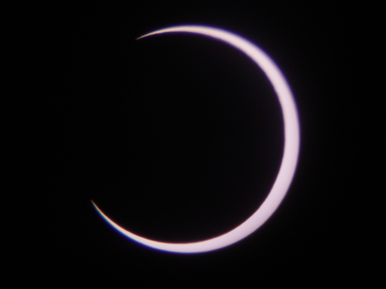
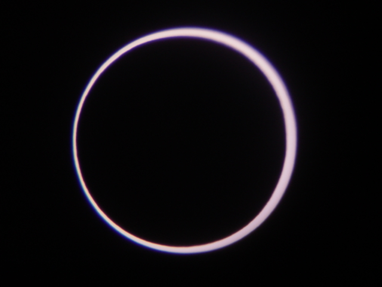
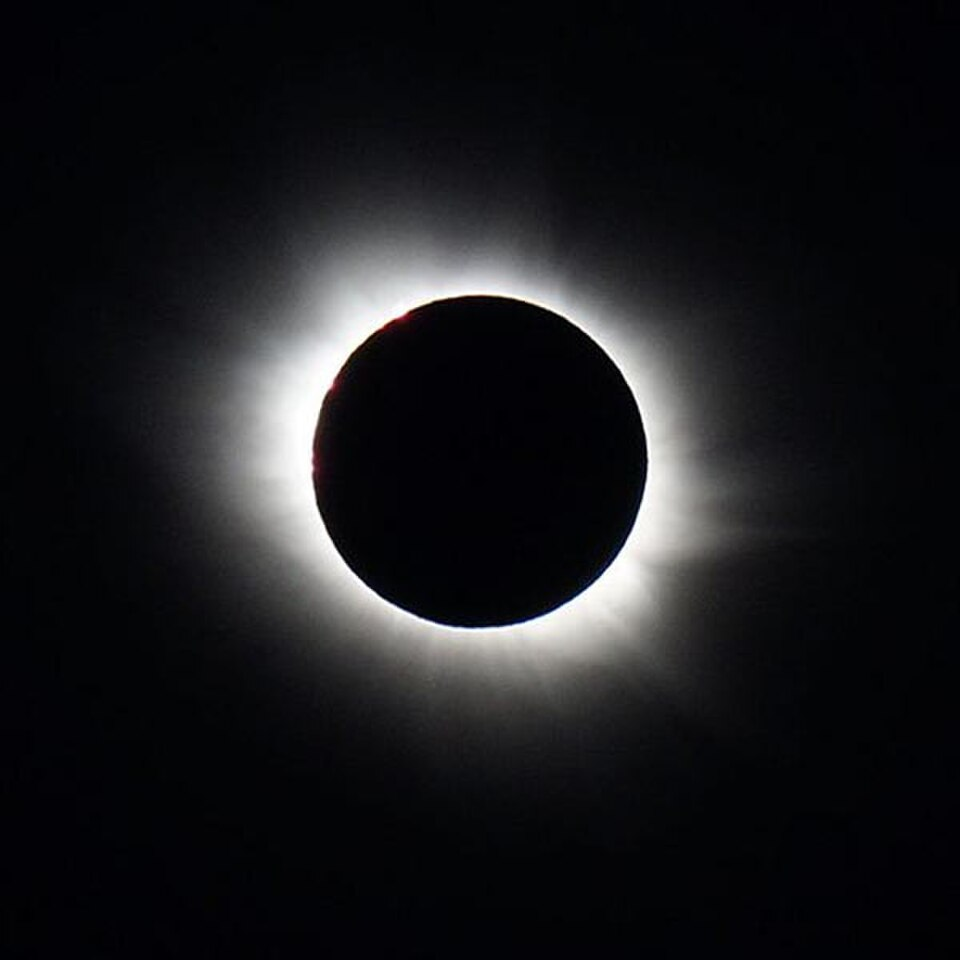
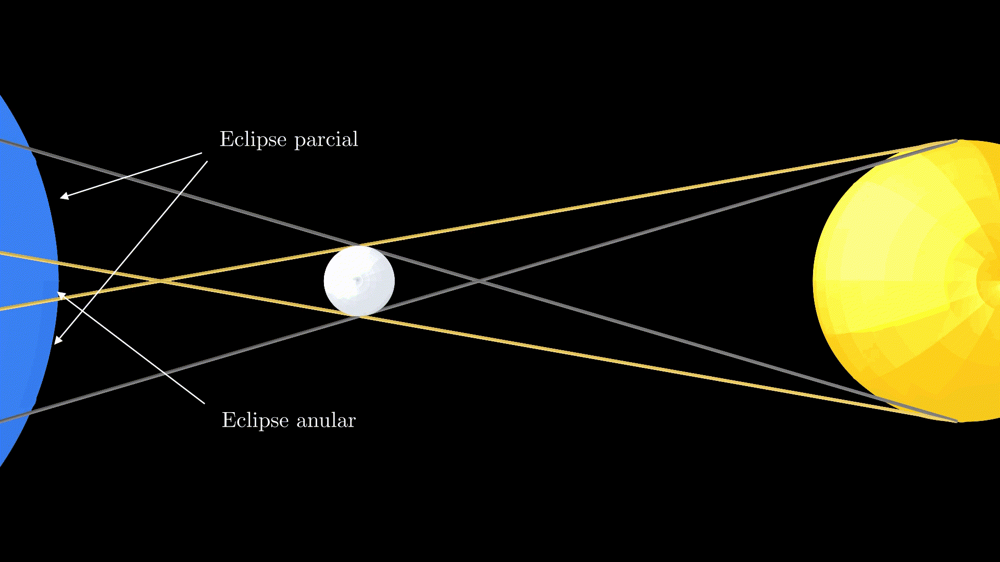
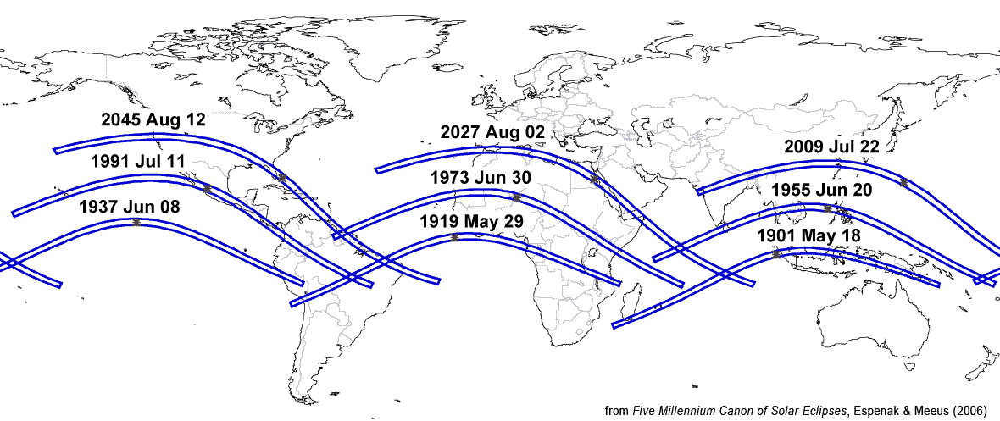
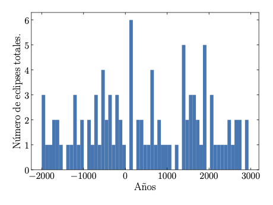

Pocas experiencias naturales despiertan tanta fascinación como los eclipses. La temperatura desciende, los animales modifican su comportamiento, aparecen las primeras estrellas y el día y la noche se confunden en un mismo instante. Los eclipses han acompañado a la humanidad desde la antigüedad, interpretados históricamente como presagios divinos o señales del destino. Una de las anécdotas más famosas data del año 585 a. C., cuando un eclipse total irrumpió en plena batalla entre lidios y medos. Ambos ejércitos interpretaron la repentina oscuridad como una señal divina de desaprobación, lo que les llevó a deponer las armas de inmediato y firmar la paz. Otro ejemplo tuvo lugar siglos más tarde, durante el cuarto viaje de Cristóbal Colón a América, cuando su expedición quedó atrapada en Jamaica dependiendo del abastecimiento de la población local para sobrevivir. Colón, que conocía por las tablas astronómicas que en 1504 iba a producirse un eclipse lunar, amenazó a los líderes locales con que su dios haría desaparecer la Luna si no recibían ayuda, y que solo la haría reaparecer si colaboraban. Cuando el eclipse terminó y la Luna recuperó su brillo, los habitantes de la isla reanudaron el suministro de alimentos a la expedición.
En la actualidad sabemos que los eclipses son el resultado de una coincidencia geométrica entre el Sol, la Tierra y la Luna. Y aún conociendo la causa, siguen fascinándonos. Millones de personas viajan miles de kilómetros buscando la franja de totalidad cual auténticos “cazadores de eclipses”. En palabras del astrónomo británico David Kipping, “It’s an awe-inspiring experience that everyone should try to see once before leaving this Earth; a moment when you are confronted with your cosmic stature from an astronomical perspective” (Es una experiencia sobrecogedora que todo el mundo debería intentar ver al menos una vez antes de abandonar la Tierra; un momento en el que te enfrentas a tu lugar en el cosmos desde una perspectiva astronómica) [1].
Pero ¿cuán frecuentes son estos fenómenos? ¿Y cuán probable es que alguien experimente un eclipse total de Sol a lo largo de su vida? La intuición y la experiencia parecen decirnos que esta probabilidad es reducida, pero ¿realmente lo es? Y si en efecto es baja, ¿hay algo que podamos hacer para aumentar nuestras opciones de alguna forma?
Desde Napkin Notes nos hemos hecho estas preguntas y en esta servilleta te contamos nuestras conclusiones. Primero veremos por qué ocurren estos fenómenos y qué tipos de eclipses existen. Después exploraremos la regularidad con la que se repiten y, finalmente, con ayuda de las matemáticas y el catálogo histórico de eclipses de la NASA [2], calcularemos la probabilidad de que una persona pueda ver un eclipse total. El objetivo es crear un poco de hype y animarte a aprovechar la oportunidad excepcional que ofrece el trío de eclipses que cruzará la península ibérica entre 2026 y 2028 [3]: 12 de agosto de 2026, 2 de agosto de 2027 (eclipses totales) y 26 de enero de 2028 (eclipse anular).
¿Qué es un eclipse?

Un eclipse ocurre cuando un cuerpo celeste bloquea total o parcialmente la luz de otro. En este artículo nos centraremos en los eclipses de Sol y de Luna. El movimiento planetario se rige por las leyes de Kepler, por las cuales sabemos que la Tierra describe una órbita elíptica alrededor del Sol. Esta órbita es plana, y está contenida en el plano de la eclíptica. A su vez, la Luna también sigue una órbita elíptica alrededor de la Tierra, aunque el plano de su órbita no coincide exactamente con el plano de la eclíptica, sino que está inclinado aproximadamente \(5.1^\circ\) con respecto a él [4]. Debido a esta inclinación, solo se podrá producir un eclipse cuando la Luna pase por un punto de su órbita que corte el plano de la eclíptica. A estos dos puntos se les denomina nodos lunares, y podemos distinguir entre nodo ascendente, cuando la Luna pasa del hemisferio sur al norte de la eclíptica, y nodo descendente, cuando pasa del hemisferio norte al sur. Además, la órbita lunar sufre un movimiento de precesión debido a la influencia de la gravedad del Sol, lo que va rotando el plano de la órbita en periodos de \(18.6\) años y, con ello, los nodos lunares [4]. En base a esto podemos tener dos posibles configuraciones:

-
En un eclipse de Sol, la Luna se sitúa entre la Tierra y el Sol, proyectando su sombra sobre una pequeña región de la superficie terrestre. Los observadores situados dentro de esa sombra ven cómo el Sol queda oculto parcial o totalmente bajo la Luna.
-
En un eclipse de Luna sucede lo contrario, es la Tierra la que se interpone entre el Sol y la Luna, proyectando su sombra sobre el satélite. Desde la superficie terrestre observamos cómo la Luna entra progresivamente en la sombra terrestre y adquiere ese característico tono rojizo, conocido popularmente como “Luna de sangre”.

Hablemos de eclipses solares
Vamos a centrarnos en eclipses solares. Como la Luna describe órbitas elípticas, su tamaño aparente visto desde la Tierra cambia a lo largo de su trayectoria, y puede variar hasta en un \(14 \%\) entre el perigeo (punto de la órbita más cercano a la Tierra) y el apogeo (punto más lejano). Así, el tamaño aparente de la Luna en el momento del eclipse determina si esta puede cubrir por completo el disco solar o no. Se pueden observar distintos tipos de eclipses solares:
-
Eclipse total: la Luna cubre completamente el disco solar, y durante unos minutos el cielo se oscurece y puede observarse la corona solar. La totalidad solo puede observarse desde una estrecha banda en la superficie terrestre denominada franja de totalidad.
-
Eclipse parcial: la Luna oculta solo una parte del Sol, y este aparece como un disco “mordido”. Son los eclipses más frecuentes.
-
Eclipse anular: la Luna no consigue cubrir completamente el Sol, el cielo nunca llega a oscurecerse del todo, y se observa un brillante anillo de luz alrededor de la Luna.
-
Eclipse híbrido: el mismo eclipse puede observarse como total desde algunas zonas de la Tierra y como anular desde otras a lo largo de la trayectoria de la sombra. Es el tipo de eclipse menos frecuente.



._(32844461616).jpg){kind=link}

¿Son aleatorios los eclipses? Descubre los ciclos de Saros
Ya hemos hablado de que los eclipses se producen cuando Sol, Tierra y Luna se encuentran alineados. Sabemos por experiencia (y porque así lo dicta la Física) que los movimientos de la Tierra con respecto al Sol y de la Luna alrededor de la Tierra son movimientos periódicos. Entonces, aunque a priori pueda parecer que los eclipses son fenómenos fortuitos, dada su naturaleza periódica, ese alineamiento de los astros está condenado a repetirse.
Para que un eclipse vuelva a producirse con características similares es necesario que coincidan simultáneamente varias condiciones: que la Luna se encuentre en la fase adecuada (todos los eclipses solares tienen lugar en Luna nueva), que esté próxima al mismo nodo de su órbita y que su distancia a la Tierra sea aproximadamente la misma. Cada una de estas condiciones está asociada a un periodo diferente del movimiento lunar [4]:
-
El intervalo entre dos configuraciones lunares idénticas respecto al Sol se denomina mes sinódico, y tiene una duración media de \(29.53\) días. Es el periodo que determina la sucesión de las fases de la Luna.
-
El tiempo que tarda la Luna en volver a pasar por el mismo nodo se denomina mes dracónico, con una duración de aproximadamente \(27.21\) días. Y como vemos, es más pequeño que el mes sinódico por el efecto de la precesión.
-
El tiempo que tarda la Luna en volver al mismo punto de su órbita respecto a la Tierra (tomando como referencia el perigeo) se denomina mes anomalístico y dura aproximadamente \(27.55\) días.
Estos tres periodos no coinciden exactamente, por lo que la geometría del sistema Sol-Tierra-Luna no se repite después de cada ciclo lunar. Sin embargo, estos tres ciclos coinciden de forma casi perfecta cada cierto tiempo. Después de 223 meses sinódicos, han pasado casi exactamente 242 meses dracónicos y 239 meses anomalísticos. Esta sincronía ocurre cada \(6585.32\) días, equivalentes a aproximadamente 18 años, 11 días y 8 horas. Este periodo recibe el nombre de ciclo de Saros [4]. El ciclo de Saros permite agrupar los eclipses en las denominadas series de Saros, familias de eclipses con una geometría muy similar que se prolongan típicamente durante 12 o 13 siglos e incluyen alrededor de 70 eclipses. Puesto que hay dos nodos lunares, podemos distinguir series de Saros pares asociadas al nodo descendente e impares para el ascendente.
Transcurrido un ciclo de Saros, el Sol, la Tierra y la Luna vuelven a quedar en la misma posición, por lo que se repite un eclipse muy parecido al ocurrido en el ciclo anterior. Sin embargo, esas ocho horas adicionales hacen que la Tierra siga girando y se desplace la zona de observación unos \(120^\circ\) hacia el oeste. ¿Y qué sucede tras tres ciclos de Saros? Las tres fracciones de ocho horas suman aproximadamente un día, la Tierra da una vuelta completa y el nuevo eclipse vuelve a ser visible desde longitudes geográficas similares. Este intervalo de unos 54 años y 33 días (tres ciclos de Saros) recibe el nombre de exeligmos. La presencia de un mes extra en el exeligmos, entre otros factores, mueve la latitud del eclipse, por lo que la trayectoria de la sombra y la franja de totalidad puedan verse desplazadas varios cientos de kilómetros. Para eclipses en el nodo ascendente, el eclipse se desplaza hacia el sur y para eclipses en el nodo descendente, hacia el norte. Esta migración norte-sur o sur-norte provoca que sucesivos eclipses a lo largo de la serie empiecen siendo pequeños y cortos, crezcan hasta alcanzar sus máximos cerca del ecuador, y después vayan disminuyendo hasta desaparecer en el polo contrario, dando por finalizada esa serie del Saros. Estos ciclos de aparición, crecimiento y desaparición de la serie de Saros duran unos 1200 años [6].

¿Cuál es la probabilidad de que experimentes un eclipse total a lo largo de tu vida?
Volvamos a la pregunta que intentábamos responder al inicio del artículo. Antes de comenzar, veamos algunas estadísticas sobre los eclipses solares [7]:
-
Desde un punto de vista astronómico, los eclipses solares totales no son un fenómeno particularmente raro, ya que a escala global ocurre un eclipse de este tipo aproximadamente cada 18 meses en algún lugar de la Tierra.
-
Aproximadamente un 70 % de la Tierra está cubierta por agua, con lo que las opciones de ver estos eventos desde lugares habitados se reducen, especialmente desde lugares muy densamente poblados.
-
La fase de totalidad de un eclipse solar es breve, puede durar desde apenas unos segundos hasta algunos minutos.
-
La trayectoria de un eclipse total es bastante estrecha, y menos del 0.5% de la superficie terrestre queda dentro de la sombra de la Luna en un eclipse concreto.
-
En un punto concreto de la Tierra se puede observar, de media, un eclipse solar cada aproximadamente 375 años.
Sin embargo, no nos conformamos con este último dato. Si los eclipses de Sol son tan espectaculares como dicen, no queremos perdérnoslo. Y nos preguntamos si existe alguna forma en que podamos aumentar nuestras probabilidades. No parece muy razonable echarse a la mar cada vez que haya un eclipse total (¡hay gente que sí que lo hace!). Pero, dado que los eclipses siguen patrones casi periódicos, a lo mejor merece la pena convertirse en cazadores de eclipses por un día y perseguir esa sombra que tanta fascinación despierta. Hoy en día podemos planificar y desplazarnos fácilmente a zonas cercanas. Con lo cual, si en vez de centrarnos en un lugar puntual, ampliamos el análisis a una región geográfica extensa, que sea realista en términos de desplazamientos, puede que nuestras probabilidades no sean tan escasas. Veamos qué dicen las matemáticas.
La pregunta es, ¿cuál es la probabilidad de que una persona pueda presenciar más de un eclipse total a lo largo de su vida en la península ibérica? Para este análisis consideramos los territorios de España y Portugal continental, excluyendo los archipiélagos de ambos países y ciudades autónomas españolas, limitando el estudio a una región geográfica accesible mediante transporte terrestre. Además, consideraremos que una persona de esta región tiene una esperanza de vida media de unos 83.7 años, media ponderada según la población de España y Portugal (datos de 2024) [8] [9] [10].
Partimos del catálogo histórico de eclipses de la NASA [2] [6], que recoge los datos de todos los eclipses (solares) desde el año 2000 a. C. hasta el año 3000 d. C., incluyendo los ya ocurridos como los futuros. Este catálogo recoge información astronómica detallada de cada eclipse, e incluye mapas que permiten visualizar la trayectoria de la sombra sobre la superficie terrestre. Hemos analizado mapa por mapa y registrado los años comprendidos a lo largo de esos cinco milenios en los cuales ha tenido lugar un eclipse total en la península ibérica. En la figura siguiente se muestra la información obtenida en un histograma:

A continuación, para cada año de nacimiento dentro del periodo temporal considerado, hemos contado el número de eclipses totales que han ocurrido o van a ocurrir durante los 83.7 años siguientes. Entonces, la probabilidad que buscamos se puede estimar como el cociente entre el número de intervalos temporales con al menos un eclipse, \(N_{\geq 1\ \text{eclipse}}\), y el número de intervalos totales considerados, \(N\),
Una vez hecho el conteo, podemos calcular fácilmente la probabilidad de visualización de al menos uno, dos, tres o incluso cuatro eclipses, obteniendo los siguientes resultados:
| # Eclipses | ≥ 1 | ≥ 2 | ≥ 3 | ≥ 4 |
|---|---|---|---|---|
| Probabilidad | 85% | 53% | 22% | 7% |
Las probabilidades han aumentado considerablemente, y ahora obtenemos unas cifras que nos permiten ser optimistas. Las reglas de la mecánica celeste siguen siendo las mismas, no es que haya más eclipses, sino más posibilidades de estar en el lugar adecuado para verlos. Ahora nos diréis que la probabilidad de que una persona pueda presenciar dos eclipses totales en la península ibérica a lo largo de su vida es de un \(53\%\), que no es tan raro. Pero daros cuenta de que tenemos nuestros dos eclipses totales ibéricos en 2026 y 2027. Estos dos son los que nos han tocado a nosotros y hay que aprovecharlos, pues el siguiente es en 2180. Así que, si quieres ver un eclipse total, no lo dudes, esta es tu oportunidad de convertirte en un cazador de eclipses y salir a buscarlos.
Recomendaciones para el eclipse del 12 de agosto de 2026
Esperamos haberte convencido sobre la importancia de presenciar este evento histórico que tendrá lugar en España el próximo 12 de agosto de 2026. Para disfrutarlo con seguridad, conviene tener en cuenta algunas recomendaciones:
-
Siempre lleva gafas para el eclipse con estándar ISO \(12312-2\): es muy importante proteger tus ojos. La observación del Sol puede producir ceguera. Es muy importante llevarlas siempre durante la fase de parcialidad del eclipse, aunque el Sol esté cubierto al \(99\%\), ya que puedes no sentir dolor pero en realidad estás quemando tu retina y te puedes quedar completamente ciego. Solo durante un estrecho margen en la fase de totalidad se puede observar sin gafas y hay que volver a ponérselas con la primera luz. Recuerda siempre hay que llevarlas puestas durante la fase de parcialidad y en eclipses anulares. Visita la web de recomendaciones oficiales.
-
Puedes consultar la franja de totalidad del eclipse en la siguiente página web. En el resto de territorio español, el eclipse del 12 de agosto será visible como un eclipse parcial. ¡Recuerda que en la zona de parcialidad no puedes quitarte las gafas!
-
Incluso eligiendo una zona de totalidad te puedes perder el eclipse. El eclipse alcanza su máximo en torno a las 20:30. Esto es \(9^\circ\) sobre el horizonte. Montañas y otros elementos pueden bloquear la visualización del mismo, verifica el mapa de sombras. De igual forma estate atento a la previsión meteorológica, sobre todo en el norte de la península.
-
El eclipse coincide con la operación salida de agosto y se espera un gran volumen de desplazamientos, presta especial cuidado en carretera y planifica con antelación la hora y el día en el que vas a salir. Visita la web sobre recomendaciones de movilidad.
Referencias
- J. Guenzel (2017). 5 Questions: Astronomer David Kipping on The Great American Eclipse. Columbia News. Disponible en: https://news.columbia.edu/news/5-questions-astronomer-david-kipping-great-american-eclipse
- NASA. (2008). World Atlas of Solar Eclipse Paths. https://eclipse.gsfc.nasa.gov/SEatlas/SEatlas.html
- Ministerio de Ciencia, Innovación y Universidades. (2026). Trío de eclipses España. https://www.trioeclipses.es/los-eclipses
- Karttunen, H., Kröger, P., Oja, H., Poutanen, M., and Donner, K. J.(2017). Fundamental Astronomy (6th ed.). Springer
- Atrio Barandela, F. (2005). Eclipse solar. 3 de octubre de 2005. Diarium. Universidad de Salamanca. https://diarium.usal.es/atrio/eclipse-solar-3-de-octubre-de-2005/
- Espenak, F., and Meeus, J. (2006). Five Millennium Canon of Solar Eclipses: -1999 to +3000 (2000 BCE to 3000 CE), (NASA/TP-2006-214141). NASA Goddard Space Flight Center. https://ui.adsabs.harvard.edu/abs/2006fmcs.book…..E/abstract
- NASA. (2024). Eclipses Frequently Asked Questions. NASA Science. https://science.nasa.gov/eclipses/faq/
- Instituto Nacional de Estadística (INE España). https://www.ine.es/
- Instituto Nacional de Estatística (INE Portugal). https://www.ine.pt/
- Eurostat. European Commission, 2024. https://ec.europa.eu/eurostat


Comentarios
Enviar un comentario
¿Qué te ha parecido? Déjanos tu comentario. Todos los comentarios serán revisados antes de su publicación a fin de mantener un espacio respetuoso, libre de spam y acorde a las normas editoriales.